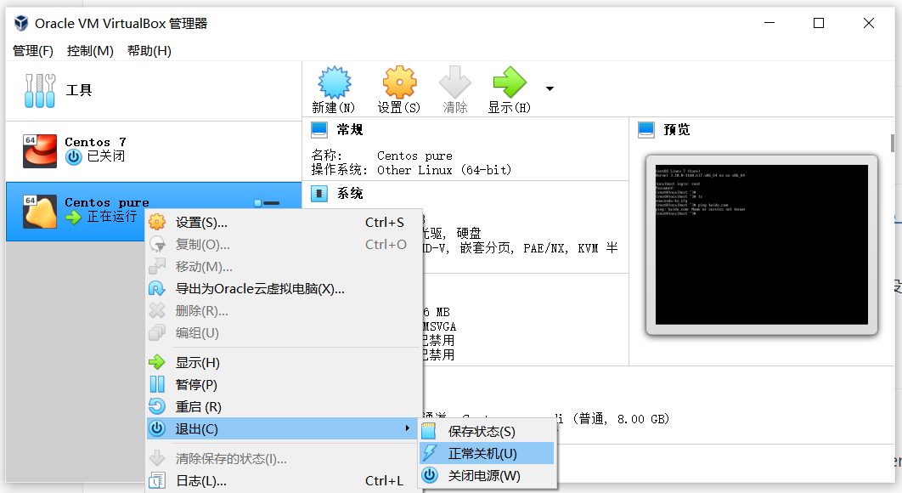

在虚拟机中安装 CentOS，主要有以下步骤:
- 安装 VirtualBox (简称 VB)
- 安装 CentOS
- 配置 CentOS
- 固定 IP
安装 VirtualBox
访问 https://www.virtualbox.org/ 下载安装即可。
安装 CentOS
- 下载 CentOS 7: 访问 https://www.centos.org/download/，点击 7(2009) 下的 x86_64 进行下载。
- 推荐下载标准版 CentOS-7-x86_64-DVD-2009.iso，有 4G 左右，带了很多工具包
- 如果下载 Mini 版本 CentOS-7-x86_64-Minimal-2009.iso，有 1G 左右，但很多工具包都没有，需要自己安装
- VirtualBox 中安装 CentOS
配置 CentOS

安装好 CentOS 后会自动启动，需要如上图关闭 CentOS 后才能进行配置 (基于Kubernetes 对硬件的要求，分配至少 2G 内存，2 个核的 CPU):
内存配置 : 设置 > 系统 > 主板，内存大小修改为 2048MB
CPU 配置: 设置 > 系统 > 处理器，处理器数量选择 2
网络配置: 设置 > 网络 > 网卡 1，勾选启用网络连接，连接方式 选择 桥接网卡
在 CentOS 中
ping baidu.com还不能访问网络，可能是启动时没有启用网络，参考 CentOS 7 开启网络连接。安装必要的工具包:
1
2
3
4
5
6
7yum install zip unzip bzip2 wget -y
#安装后才能使用 ifconfig 等
yum install net-tools -y
# 安装 pstree 查看进程树 (pstree -g)
yum install psmisc -y使用阿里的 yum 镜像 (国内访问 yum 默认镜像太慢，可以更换为比较稳定的阿里云镜像)
- 备份:
mv /etc/yum.repos.d/CentOS-Base.repo /etc/yum.repos.d/CentOS-Base.repo.backup - 修改:
wget -O /etc/yum.repos.d/CentOS-Base.repo http://mirrors.aliyun.com/repo/Centos-7.repo
- 备份:
至此，VB 中的 CentOS 基本算是安装配置好了。为了以后方便，不再重复上面的安装配置步骤，可以把虚拟机导出，下次直接导入使用。
固定 IP
先局域网分配 IP 后，把 IP 分配策略由 dhcp 修改为固定 IP: